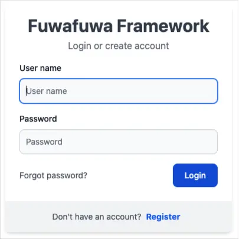

Controllers & Routing
Controllers handle incoming HTTP requests and determine the appropriate response, while routing maps
incoming URLs to specific controller methods. For example, the URL /user/view doesn't
directly
correspond to a physical file; instead, the routing mechanism directs the request to the correct
controller.
Routing
Routing associates a URI with a controller method. Fuwafuwa Framework uses the following steps to determine the appropriate handler for a given request:
- Path Decomposition: The incoming URL is split into two parts: the class name
and
the action method. The last segment of the URL becomes the action, and the remaining part forms
the
class name. For instance,
/user/admin/addwould result in theUser\Adminclass and theaddaction. - Controller Search: The framework looks for a matching controller class in the
app/controllersdirectory. If found, the corresponding method is executed. - View Search: If no matching controller is found, the framework searches for a
view
file with the same name as the URL (e.g.,
user/admin/add.html) in the app/views directory. If found, the\Fuwafuwa\Controller\Viewcontroller is implicitly created to render the view. - 404 Error: If neither a controller nor a view is found, a 404 error is returned.
Controllers Folder
Controllers are PHP classes typically located in the app/controllers directory. Fuwafuwa
Framework
employs a dual-root structure with system and user subfolders. The system folder contains core
framework
controllers and utilities, while the user folder is reserved for custom application controllers.
The framework prioritizes controllers in the user folder over those in the system folder. When a
request
arrives, the search for a matching controller begins in app/controllers/user, followed
by
app/controllers/system. If no controller is found, the search continues in the views
folder.
Views Folder
Similar to the controllers folder, the views folder uses a triple-root structure: system, themes, and user. This organization allows for system updates without overwriting custom views. To customize system or theme views, it's recommended to copy the desired files to the user folder and make modifications there.
Controllers
A controller is a PHP class responsible for handling incoming HTTP requests and generating
responses. It
typically implements the \Fuwafuwa\Controller interface or defines
execute
method.
class Example implements \Fuwafuwa\Controller {
function execute(\Base $f3, string $action = ""){
print "Hello";
}
};
Authentication
Fuwafuwa Framework provides a built-in authentication mechanism implemented in
app/controllers/user/model/user.php. By default, user credentials are validated
against the
user table.
Custom Authentication
To implement custom authentication logic, create a class that extends the default authentication class and overrides the login method. The login method should return an array with the following structure:
[
'authed' => true, // or false if invalid login
'user' => [ // will be put in SESSION
'username' => $user['login'],
'fullname' => $user['fullname'],
'group' => $user['role']
]
];
To register your custom authentication class, set the auth_class key in the APP section
of the
app/configs/config.ini file.
Model & SQL
Fuwafuwa Framework provides a BaseModel class to simplify database interactions. This class
handles common CRUD operations and offers additional features for data retrieval and manipulation.
<?php
namespace Model;
class User extends \Fuwafuwa\BaseModel {
function __construct(\Fuwafuwa\Db $db) {
parent::__construct($db, 'user', ['ai_field' => 'login', 'created_field' => 'created', 'modified_field' => 'updated', 'deleted_field' => 'deleted', ]);
Data Retrieval
To retrieve data from the database, you can use either the retrieve method or the original
load method inherited from the F3 framework.
$user = m('\Model\User');
$user->load(['login = ?', 'admin']);
if($user->loaded()) {
print $user->fullname;
// or
print $user['fullname'];
} else {
print "user not found";
}Data Manipulation
Updating Records:
After a record successfully loaded, we can modify the data.
$user = m('\Model\User');
$user->load(['login = ?', 'admin']);
if($user->loaded()) {
$user->fullname = 'Super Admin';
$user->save();
} else {
print "user not found";
}Inserting New Records:
$user = m('\Model\User');
$user->login = 'user';
$user->fullname = 'User';
$user->save();
Raw SQL Queries
For complex queries that require joins or custom SQL logic, you can use the SQL trait:
use \Fuwafuwa\Traits\SQL;
function user_count() {
$count = $this->SQL('SELECT COUNT(1) FROM user')[0][0];
// or
$count = $this->FSQL1('SELECT COUNT(1) FROM user');
}Ajax Interactions
Fuwafuwa Framework simplifies asynchronous communication with your server using Ajax for dynamic content
updates. This section explores utilizing the \Fuwafuwa\Controller\Ajax class and its
functionalities.
-
Server-Side with
- Extending the Ajax Class: Create a class that extends \Fuwafuwa\Controller\Ajax. This establishes the foundation for your Ajax controller.
- Handling Requests: Define methods within your Ajax controller class to handle specific Ajax requests. These methods typically receive the F3 framework instance as an argument ($f3).
- Accessing Data: Fuwafuwa Framework automatically parses the request body (if it's a POST request) and provides the data as an array in the $data property of your controller. You can also access query parameters using standard F3 techniques.
- Processing and Returning Data: Inside your Ajax controller method, process the received data, perform any necessary operations (e.g., database interactions), and prepare a response. The sendJson method provided by the Ajax class simplifies sending JSON responses to the client.
\Fuwafuwa\Controller\Ajax
<?php
namespace Ajax;
class Test extends \Fuwafuwa\Controller\Ajax {
use \Fuwafuwa\Traits\Content;
function country($f3) {
// Access query parameter 'q'
$q = $this->data['q'];
// Process and filter countries data
$countries = array_column(json_decode($this->json, true), 'name');
$result = $this->filterCountries($countries, $q);
// Send JSON response
$this->sendJson($result);
}
private function filterCountries($countries, $q) {
if ($q) {
// Filter countries based on query string
return array_values(array_filter($countries, fn($e) => stripos($e, $q) !== false));
} else {
// Return a subset of countries if no query is provided
return array_values(array_slice($countries, 0, 10));
}
}
}Client-Side JavaScript
Fuwafuwa Framework might not offer built-in JavaScript methods for Ajax requests, but here's a general approach:
- Fetch Data: Use the fetch API or a suitable library to make Ajax requests to your server-side Ajax controller endpoints.
- Process Response: Parse the JSON response received from the server.
- Handle Success/Error: Implement logic to display success notifications (e.g., popups) or error messages based on the response data.
save() {
this.data['content'] = tinymce.get('content').getContent();
fetchData('{{@BASE}}/ajax/content/post-edit', { data: this.data, oper: this.data.id ? 'edit' : 'add' }).then(data =>
popupInfo('Post sudah disimpan')
).catch(e => popupError(e));
}API
Fuwafuwa Framework simplifies the creation of APIs through its\Fuwafuwa\Controller\Api base
class. This class provides a foundation for building API endpoints with essential functionalities.
Core Features
-
Simplified Response Handling: The sendJson method conveniently formats and sends JSON responses. -
Automatic Data Parsing:
Incoming request data is automatically parsed and made accessible through the$dataproperty. - Bearer Token Authentication: Built-in support for Bearer Token authentication, ensuring secure API access.
Creating an API Endpoint
-
To create an API endpoint, follow these steps:
- Create an API Controller: Extend the \Fuwafuwa\Controller\Api class and define methods for your API endpoints.
- Define API Logic: Implement the desired logic within your controller methods.
- Return JSON Response: Utilize the sendJson method to send JSON-formatted data as the API response.
<?php
namespace Api;
class Common extends \Fuwafuwa\Controller\Api {
use \Fuwafuwa\Traits\Content;
function register(\Base $f3): void {
$this->sendJson(c('\Fuwafuwa\Service\Member')->register($this->data));
}
function activation(\Base $f3): void {
$this->sendJson(c('\Fuwafuwa\Service\Member')->activate($this->data));
}
}CLI (Command-Line Interface)
Fuwafuwa Framework provides a CLI (Command-Line Interface) component for executing tasks directly from the command line. This is particularly useful for automating processes, running scripts, or performing administrative tasks.
Creating CLI Commands
To create a CLI command, extend the \Fuwafuwa\Controller\Cli class and define public methods within your class. These methods will become available as CLI commands.
class Generator extends \Fuwafuwa\Controller\Cli implements \Fuwafuwa\Controller\Controller {
/**
* List available generators.
*
* @param \Base $f3
* @return void
*/
function list(\Base $f3): void {
$methods = get_class_methods(self::class);
$methods = array_filter($methods, function ($m) {
$ref = new \ReflectionMethod(self::class, $m);
return $ref->isPublic();
});
array_splice($methods, 0, 5);
print join("\n", $methods);
}
Executing CLI Commands
To execute a CLI command, run the following command from your project's root directory:
php index.php <controller_name>/<method_name> [arguments]php index.php fuwafuwa/generator/model --table=userThis will execute the list method within the Generator class.
Command-Line Arguments
CLI commands can accept arguments using the $f3['GET'] variable. The getopt function can be
used to parse command-line arguments and populate the $f3['GET'] array. Example:
php index.php fuwafuwa/generator/model --table=users --fields=id,name,emailIn this example, --table=users and --fields=id,name,email are passed as
arguments and can be accessed in the Generator class using $f3['GET']['table'] and
$f3['GET']['fields'].